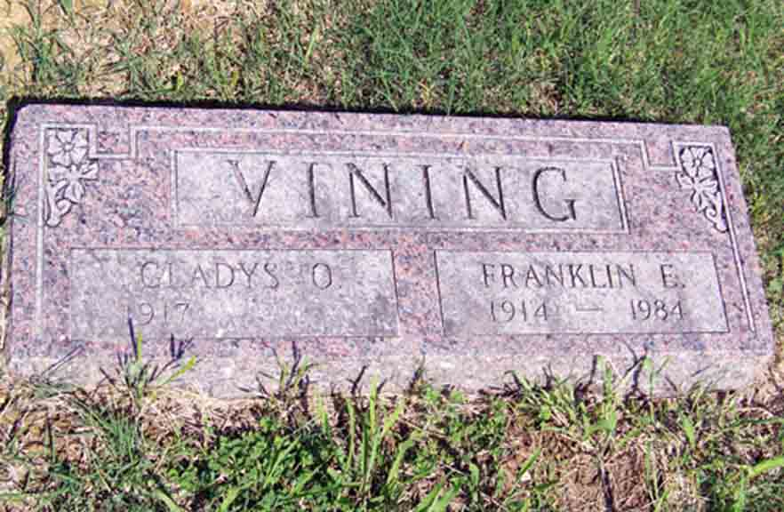

Census Data
| 1940 | |
| Franklin Erwin Vining | 26 |
| Gladys Opal (Carter) Vining | 24 |
| Franklin Vining | 5 |
| Donald R. Vining | 3 |

Death Data
Headstone for Franklin Erwin Vining and Gladys Opal (Carter) Vining, in Harrison Cemetery, Thayer, Wilson County, Kansas (from Find A Grave):